qemu-img create -f qcow2 "void-live-i686--base.qcow2" 20G
Download Void Linux live ISO image:
Start qemu to install from ISO image (tested with QEMU emulator version 8.1.3):
qemu-system-i386 -m 2048 -enable-kvm \
-monitor stdio \
-hda "void-live-i686--base.qcow2" \
-cdrom "void-live-i686-20230628-base.iso" \
-boot d
You should see the boot screen (choose the default/first option):
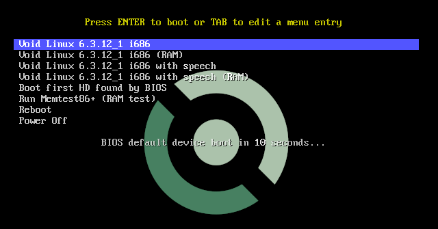
followed by the login screen:
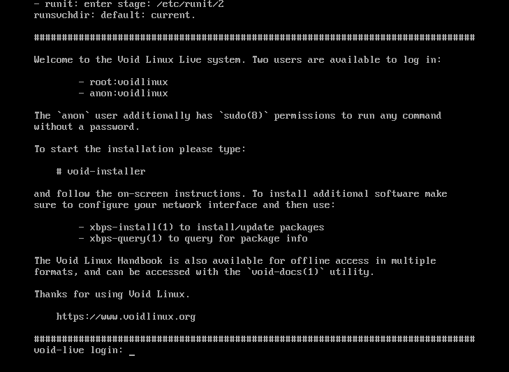
Login as root with voidlinux, then start the installer program
void-installer, then follow the installation instructions, this is the
installer main menu:
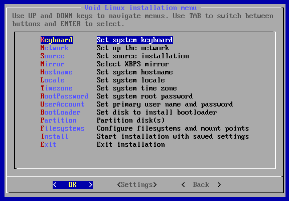
Options Keyboard and Network are straightforward.
For Source I always choose Local and then update the system later
using xbps-install -Su
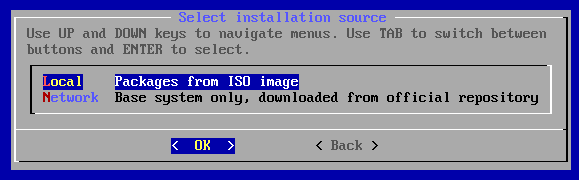
Set Mirror according to the VM geographical location or use a global mirror:
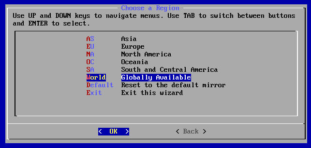
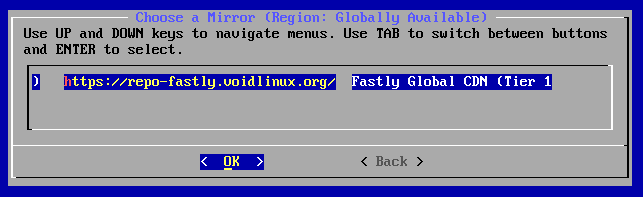
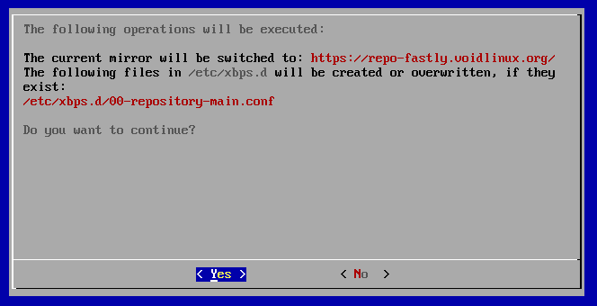
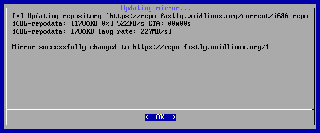
To select another choice of mirror after installation, simply call xmirror
on a terminal.
For Hostname, Locale and Timezone I leave them untouched, these are the default installer settings:
# cat /etc/hostname
void
# cat /etc/locale.conf
LANG=C.UTF-8
LC_COLLATE=C
TODO: timezone
Options RootPassword and UserAccount are also straightforward.
Option BootLoader is trivial, there is just one sensible option:
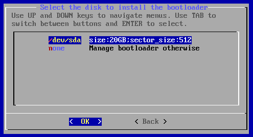
Now start the most critical settings below, the Partition option:
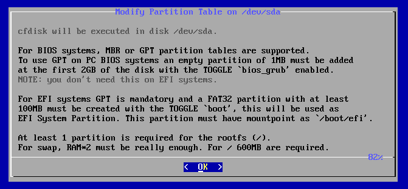
scroll...
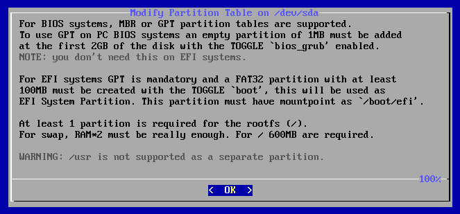
After following the instructions above for GPT and no UEFI, you should end up
with a this configuration on cfdisk:
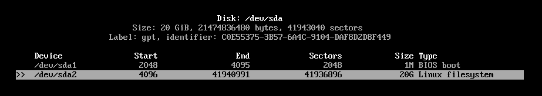
Pay close attention to these steps:
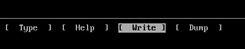
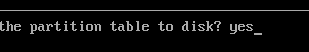
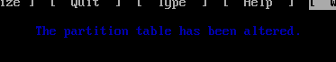
I normally do not use a swap partition, if the need arises, it is trivial to
setup a swap file on the root partition:
swapon --show
dd iflag=fullblock if=/dev/zero of=/swapfile bs=4096 count=524288 2>/dev/null
mkswap /swapfile
chmod 0600 /swapfile
swapon /swapfile
# then add this to /etc/fstab: "/swapfile none swap sw 0 0"
Now comes the filesystem setup, XFS is a fine choice:
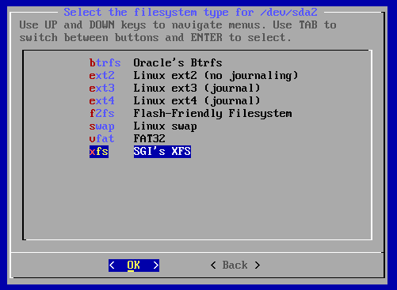
Mount it to the root directory:
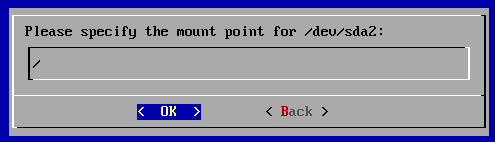
Format and done:
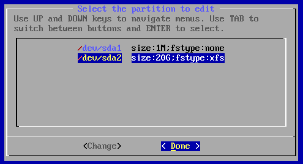
Now just Install:
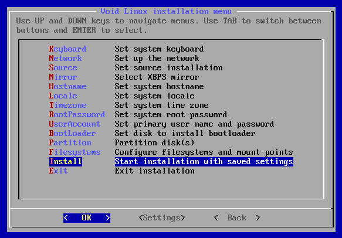
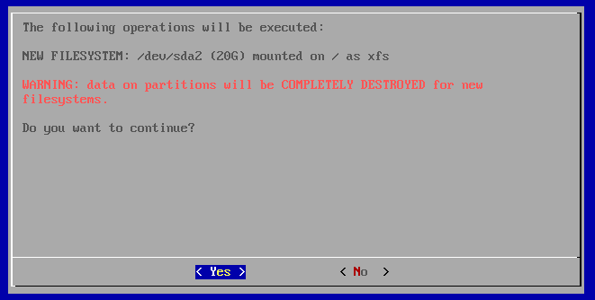
After installation is complete, choose to not restart, exit installer and
shutdown the VM with shutdown -h now.
qemu-system-i386 -m 2048 -hda "void-live-i686--base.qcow2"
After logging in with root and the choosen password from installation, it is
advisable to change to a more friendly shell that is available, as shown below:
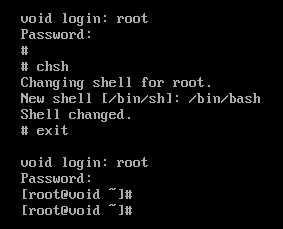
Then update the package manager and the system:
xbps-install -Suy xbps
xbps-install -uy
After the last command you should end up with something similar to this:
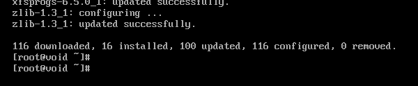
Then install these packages:
xbps-install xtools lsof wget curl lynx zip perl rsync unzip
xbps-install zsh mg nano vim tmux rlwrap colordiff groff time
xbps-install patch make git gcc gdb automake autoconf libtool
xbps-install xorg-minimal xorg-input-drivers xorg-video-drivers
xbps-install setxkbmap xauth font-misc-misc terminus-font
xbps-install dejavu-fonts-ttf xterm xrandr xset jwm vtwm
xbps-install firefox geany ncurses ncurses-devel libXt-devel
xbps-install motif-devel motif-mwm motif-xmbind xlsfonts
xbps-install font-adobe-100dpi font-adobe-75dpi
These packages are both very useful and some of them are prerequisite to build CMUCL.
After installation of additional packages, you should end up with roughtly this disk usage:
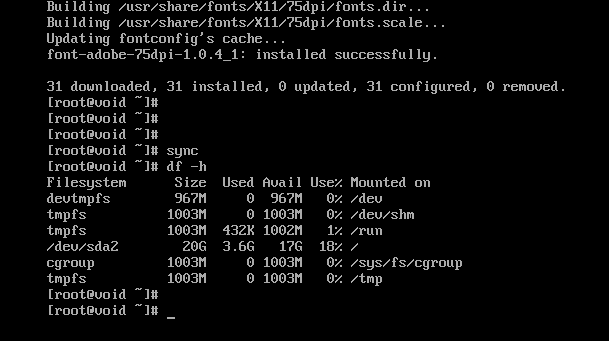
gcc version available at the time of this writting (January 11, 2024):
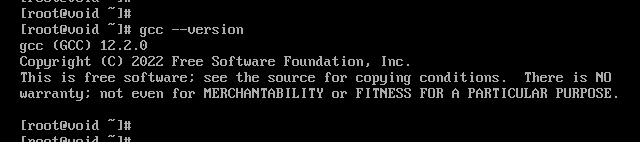
chmod a-w "void-live-i686--base.qcow2"
qemu-img create -f qcow2 -o backing_file="void-live-i686--base.qcow2" \
-F qcow2 "void-live-i686.qcow2"
qemu-system-i386 -m 2048 -enable-kvm \
-monitor stdio \
-hda "void-live-i686.qcow2" \
-boot c
In guest, connect to host and send local tcp port 22 as remote (-R) 2223:
ssh -R2223:127.0.0.1:22 hostuser@10.0.2.2 'while date; do sleep 30; done'
In host, connect to guest:
TERM=screen ssh -p2223 void@127.0.0.1
TERM is important for tmux to properly work.
Some instructions below only applies to zsh, adapt accordingly to your
favorite shell.
mkdir -p ~/Downloads
git clone 'https://github.com/ctarbide/coolscripts.git' ~/Downloads/coolscripts
PATH=${HOME}/Downloads/coolscripts/bin:${PATH}
(set -eux; cd ~/Downloads/coolscripts/examples; nofake shell-tips.nw | sh)
chsh -s /bin/zsh
git config --global user.email "you@example.com"
git config --global user.name "Your Name"
git config --global init.defaultBranch master
Create a ~/.xinitrc file with these contents:
setxkbmap us
# faster keyboard repeat rate and smaller delay
xset r rate 190 35
xsetroot -solid '#0f2023'
# exec vtwm
exec jwm
After login:
exec startx
Hints:
$ xrandr --output Virtual-1 --mode 1440x900
(qemu) sendkey ctrl-alt-f2
cd ~
wget -cN 'https://common-lisp.net/project/cmucl/downloads/snapshots/2023/08/cmucl-2023-08-x86-linux.tar.bz2'
(set -eux; mkdir -pv ~/cmucl-2023-08-x86-linux; cd cmucl-2023-08-x86-linux; tar -xjf ../cmucl-2023-08-x86-linux.tar.bz2)
cd ~
wget -cN 'https://common-lisp.net/project/cmucl/downloads/snapshots/2023/08/cmucl-src-2023-08.tar.bz2'
(set -eux; mkdir -pv ~/cmucl-src-2023-08; cd cmucl-src-2023-08; tar -xjf ../cmucl-src-2023-08.tar.bz2)
cd ~/cmucl-src-2023-08
bin/build.sh -B boot-2021-07-2 -R -C x86_linux -o ~/cmucl-2023-08-x86-linux/bin/lisp
bin/make-dist.sh -V 2023-08 -I dist linux-4
Build shouldn't take long:
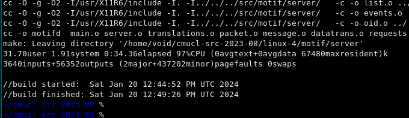
And should work fine:
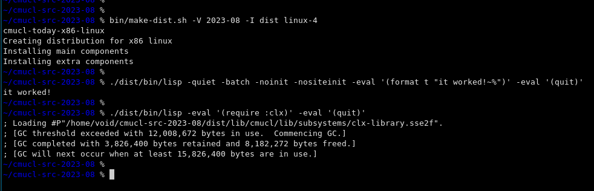
https://repo-default.voidlinux.org/live/current/void-live-i686-20230628-base.iso
https://github.com/void-linux/void-mklive/blob/master/build-x86-images.sh
https://www.howtogeek.com/455981/how-to-create-a-swap-file-on-linux/
https://docs.voidlinux.org/xbps/repositories/mirrors/changing.html
https://gitlab.common-lisp.net/cmucl/cmucl/-/wikis/Developer/BuildingCmucl
https://common-lisp.net/project/cmucl/downloads/snapshots/2023/08/
https://gitlab.common-lisp.net/cmucl/cmucl/-/blob/master/.gitlab-ci.yml
https://common-lisp.net/project/cmucl/downloads/snapshots/2023/08/cmucl-2023-08-x86-linux.tar.bz2
https://common-lisp.net/project/cmucl/downloads/snapshots/2023/08/cmucl-src-2023-08.tar.bz2
This page was last modified on February 11, 2024 at 19:25:15 UTC.